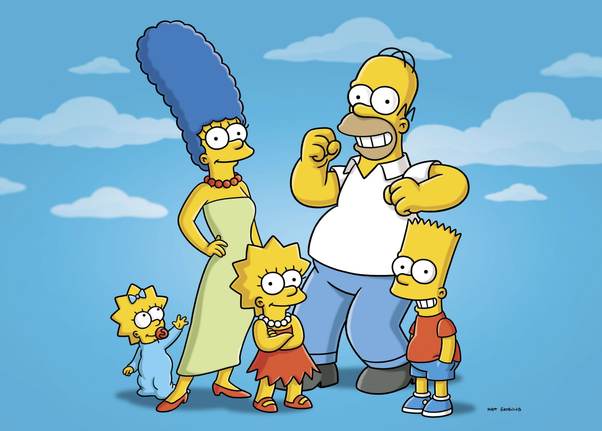

About Homer Simpsons
Homer Jay Simpson is a fictional character and the main protagonist of the American animated sitcom The Simpsons. He is voiced by Dan Castellaneta and first appeared, along with the rest of his family, in The Tracey Ullman Show short "Good Night" on April 19, 1987.
Homer Simpson and his family
Homer's Characteristics
- He's Ignorant and unprofessional
- He's fond of beer and junk food
- He's got superhuman strength
Homer's Friends
He spends a great deal of his time at Moe's Tavern with his lifelong friends Barney, Carl, Lenny, and bartender Moe Szyslak. Click on the links below to read more about them